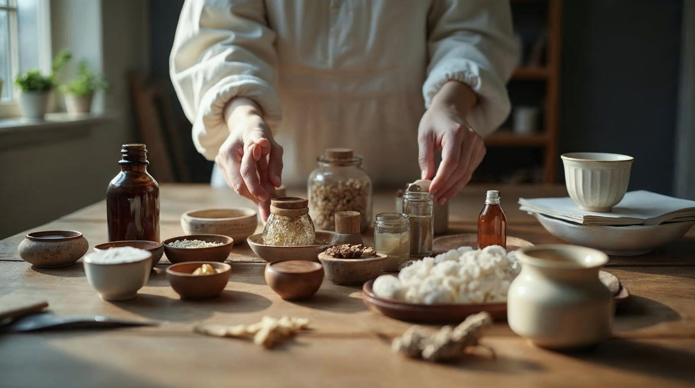
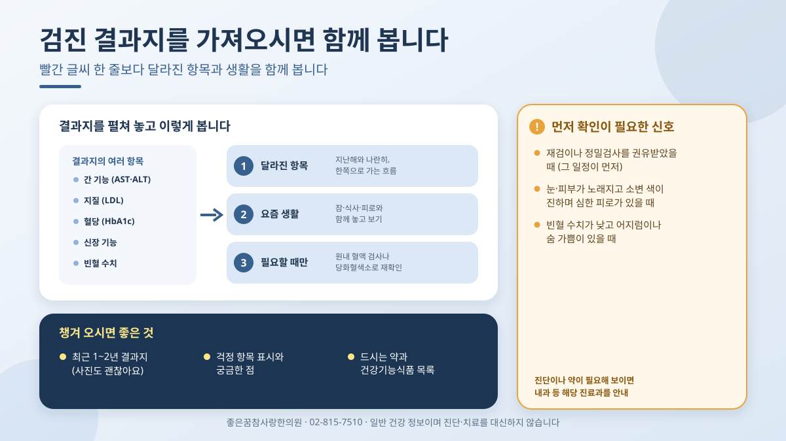

이종호 한의사 감수좋은꿈참사랑한의원 대표원장 (한의사 면허번호 19769)발행 2026-11-23 · 수정 2026-11-26
이 글의 차례
검진 결과지를 가져오시면 빨간 글씨 한 줄만 보지 않고, 지난해와 비교해 달라진 항목과 요즘의 잠·식사·피로를 함께 놓고 봅니다. 수치가 경계선이라 생활부터 정리하고 싶은 분께 특히 도움이 되며, 재검이나 정밀검사를 권유받았다면 그 일정이 먼저입니다.
결과지를 바탕으로 병명을 정하거나 약을 시작·조절하는 일은 내과 등 해당 진료과의 몫입니다. 한의원에서는 수치의 흐름을 생활과 이어서 보고, 진단이나 약 판단이 필요해 보이면 그 진료과를 먼저 안내합니다.
왜 결과지가 어렵게 느껴질까요
- 항목이 많고 AST, ALT, LDL, HbA1c 같은 약어로 적혀 있어 무엇을 뜻하는지 알기 어렵습니다.
- 한 번의 수치는 검사 전날 식사나 음주, 컨디션에 따라 흔들릴 수 있습니다.
- 기준 범위 안이어도 해마다 한쪽으로 움직이는 흐름이 더 중요한 경우가 있습니다.
- 생활과 연결해서 보지 않으면 무엇을 바꿔야 할지 정리하기 어렵습니다.
결과지에서 자주 함께 보는 항목
- 간 기능(AST, ALT, 감마지티피): 음주, 체중 변화, 드시는 약에 따라 달라질 수 있어 생활 이야기와 함께 봅니다.
- 지질(총콜레스테롤, LDL, HDL, 중성지방): 중성지방은 검사 전 식사와 음주의 영향을 받기 쉬워 전날 생활을 함께 여쭙습니다.
- 혈당(공복혈당, 당화혈색소): 공복혈당은 전날 생활의 영향을, 당화혈색소는 두세 달의 흐름을 비춰 봅니다.
- 신장 기능(크레아티닌, 사구체여과율)과 간 기능: 한약 상담 때 처방을 정하는 참고 자료가 됩니다.
- 빈혈(혈색소): 피로, 어지럼, 숨 가쁨과 이어서 봅니다.
- 기준 범위는 검사 기관마다 조금씩 다를 수 있어, 결과지에 적힌 검사 기관의 참고치를 따릅니다.
먼저 이렇게 여쭙니다
- 최근 1~2년의 검진 결과지를 가지고 계신가요?
- 결과지에서 특히 걱정되는 항목이 있나요?
- 드시는 약이나 건강기능식품이 있나요?
- 요즘 피로, 소화, 잠에 변화가 있나요?
- 검사 전날 음주나 늦은 식사가 있었나요?
스스로 점검해 보세요
- 올해와 지난해 결과지를 둘 다 찾을 수 있다
- 빨간 글씨나 주의 표시가 있는 항목에 동그라미를 쳐 두었다
- 결과지에 재검이나 정밀검사 권유 문구가 있는지 확인했다
- 검사 전날 술을 마셨거나 늦게 야식을 먹었다
- 드시는 약과 건강기능식품 이름을 모두 적을 수 있다
- 요즘 피로·소화·잠 가운데 달라진 것이 있다
- 같은 항목이 해마다 조금씩 오르거나 내리고 있다
일상에서 먼저 해 볼 수 있는 것
- 올해와 지난해 결과지를 나란히 놓고 비교해 보기
- 걱정되는 항목에 표시해 두고 질문을 적어 오기
- 드시는 약과 건강기능식품 이름을 사진으로 찍어 두기
- 재검을 권유받았다면 미루지 않기
- 다음 검사 전날에는 술과 늦은 야식 피하기
예를 들면 이런 경우입니다
- 예를 들어 회식이 잦은 직장인이 간 수치와 중성지방에 표시가 붙은 결과지를 받은 경우라면, 검사 전날 일정과 한 주의 술자리 횟수, 잠드는 시각을 함께 적어 오시면 생활에서 먼저 바꿀 것을 정하기 쉽습니다.
- 예를 들어 오래 책상에 앉아 지내며 끼니를 자주 거르는 수험생이 빈혈 수치가 낮다는 이야기를 들은 경우라면, 어지럼과 숨 가쁨이 있는지 먼저 여쭙고, 빈혈의 원인은 검사한 병원이나 내과에서 먼저 확인하시도록 안내한 뒤 식사 리듬을 함께 살핍니다.
- 예를 들어 혈압약과 고지혈증약을 드시는 어르신이 한약 상담을 원하신다면, 결과지의 간·신장 수치와 드시는 약 목록을 함께 보고 처방 여부를 신중하게 정합니다.
얼마나 지켜보고 언제 상담할까요
- 기준 범위를 살짝 벗어난 항목이 하나이고 증상이 없다면, 그 수치의 의미와 재검 시기는 검사한 병원이나 담당 의사에게 먼저 확인하세요. 검사 전날 음주나 늦은 식사가 있었는지도 떠올려 보고, 몇 주 생활을 정리한 뒤 다음 검사에서 다시 비교합니다.
- 같은 항목이 2~3년 연달아 한쪽으로 움직이고 있다면 기준 범위 안이어도 생활 점검을 시작해 볼 때입니다.
- 결과지에 재검이나 정밀검사 권유가 적혀 있다면 한의원 상담보다 그 일정을 먼저 잡으세요.
- 이럴 땐 바로 내과로 가세요. 눈이나 피부가 노래지고 소변 색이 진한 경우, 검은 변이나 피가 섞인 변을 본 경우입니다. 빈혈 수치가 낮으면서 숨이 차고 어지러워 쓰러질 것 같거나, 가슴 통증이 심하거나 정신이 흐려지면 가까운 응급실로 가세요.

한의원에서 함께 살필 수 있는 경우
- 검진 수치가 경계선이라 생활 습관을 정리하고 싶은 경우 식사·잠·활동 리듬을 함께 살핍니다.
- 필요하다고 판단될 때 혈액 항목을 확인해 지난 결과와 비교해 봅니다.
- 수치에 따라 진단이나 약이 필요해 보이면 내과 등 해당 진료과를 안내합니다.
좋은꿈참사랑한의원에서는 결과지를 함께 펼쳐 놓고 달라진 항목과 생활 이야기를 먼저 나눕니다. 진맥을 기본으로 하고 필요하다고 판단될 때 원내 혈액 검사기(마인드레이·PT10)나 당화혈색소 검사로 일부 항목을 다시 확인하고, 설진으로 몸 상태를 살핀 뒤 생활 계획과 한약 상담 등을 정합니다. 진단이나 약이 필요해 보이면 내과 등 해당 진료과를 안내합니다.
첫 방문은 결과지와 드시는 약 목록을 접수 때 함께 보여 주시는 것에서 시작합니다. 진료실에서는 걱정되는 항목과 요즘 생활을 먼저 듣고, 맥을 짚은 뒤 혀와 배를 살핍니다.
필요하다고 판단될 때 일부 항목을 다시 확인하거나 인바디 770으로 체성분을 함께 본 다음, 생활에서 먼저 바꿀 것과 한약 상담 여부를 정합니다. 다음에 오시면 표시해 둔 항목과 바꿔 본 생활을 이어서 확인합니다. 원내 검사 비용과 보험 적용 여부는 방문 전 전화로 확인해 주세요.
이렇게 기록해 오시면 상담이 쉬워집니다
- 최근 1~2년의 결과지(사진도 괜찮습니다)
- 표시해 둔 걱정 항목과 궁금한 점
- 드시는 약과 건강기능식품 목록
- 요즘의 피로·소화·잠의 변화
이런 증상은 먼저 확인이 필요합니다
- 검진에서 재검이나 정밀검사를 권유받은 경우
- 눈이나 피부가 노래지고 소변 색이 진하며 심한 피로가 함께 있는 경우
이런 신호가 있으면 한의원보다 가까운 병원이나 응급실을 먼저 찾으세요.
관련 글
- 다른 병원 혈액검사 결과는 어떤 형태로 가져가면 좋을까요?
- 당화혈색소(HbA1c) 수치는 무엇을 뜻하나요?
- 콜레스테롤과 중성지방 수치가 높게 나오면 생활에서 무엇부터 보나요?

여쭙는 것
- 최근 1~2년의 검진 결과지를 가지고 계신가요?
- 결과지에서 특히 걱정되는 항목이 있나요?
- 드시는 약이나 건강기능식품이 있나요?
생활에서 해 볼 것
- 올해와 지난해 결과지를 나란히 놓고 비교해 보기
- 걱정되는 항목에 표시해 두고 질문을 적어 오기
- 드시는 약과 건강기능식품 이름을 사진으로 찍어 두기
한의원에서 함께 살필 것
- 검진 수치가 경계선이라 생활 습관을 정리하고 싶은 경우 식사·잠·활동 리듬을 함께…
- 필요하다고 판단될 때 혈액 항목을 확인해 지난 결과와 비교해 봅니다.
- 수치에 따라 진단이나 약이 필요해 보이면 내과 등 해당 진료과를 안내합니다.
먼저 확인이 필요한 신호
- 검진에서 재검이나 정밀검사를 권유받은 경우
- 눈이나 피부가 노래지고 소변 색이 진하며 심한 피로가 함께 있는 경우
한눈에 보는 표
| 구분 | 핵심 |
|---|---|
| 여쭙는 것 | 최근 1~2년의 검진 결과지를 가지고 계신가요? 결과지에서 특히 걱정되는 항목이 있나요? |
| 생활에서 해 볼 것 | 올해와 지난해 결과지를 나란히 놓고 비교해 보기 걱정되는 항목에 표시해 두고 질문을 적어 오기 |
| 한의원에서 함께 살필 것 | 검진 수치가 경계선이라 생활 습관을 정리하고 싶은 경우 식사·잠·활동 리듬을 함께 살핍니다. 필요하다고 판단될 때 혈액 항목을 확인해 지난 결과와 비교해 봅니다. |
| 먼저 확인이 필요한 신호 | 검진에서 재검이나 정밀검사를 권유받은 경우 눈이나 피부가 노래지고 소변 색이 진하며 심한 피로가 함께 있는 경우 |
자주 묻는 질문
결과지 사진만 가져가도 되나요?
네. 항목과 수치가 잘 보이면 사진으로도 충분히 함께 볼 수 있습니다.
한의원에서 혈액검사를 꼭 하나요?
아닙니다. 모든 분이 하지는 않고, 필요하다고 판단될 때만 확인합니다.
수치가 기준 범위 안이면 신경 쓰지 않아도 되나요?
대부분 괜찮지만, 해마다 한쪽으로 계속 움직이는 항목은 생활을 점검해 볼 신호가 될 수 있어 흐름을 함께 봅니다.
몇 년 치 결과지를 가져가면 좋나요?
최근 2~3년 치가 있으면 흐름을 보기 좋습니다. 한 해 것만 있어도 괜찮습니다.
결과지만 보고 한의원에서 병명을 알려 주나요?
아닙니다. 진단은 내과 등 해당 진료과에서 다른 검사와 함께 정합니다. 한의원에서는 수치의 흐름을 생활과 이어서 보고, 필요하면 해당 진료과를 안내합니다.
한약을 먹기 전에 혈액검사가 필요한가요?
모든 분께 하지는 않습니다. 간·신장 질환이 있거나 걱정되는 경우 최근 결과지를 먼저 참고하고, 필요하다고 판단될 때 확인합니다.
좋은꿈참사랑한의원은 재진 때 지난번 이야기부터 이어서 여쭙니다. 진료시간과 예약은 오시는 길에서 확인하세요.
어디서 상담받을 수 있나요?
좋은꿈참사랑한의원은 서울 동작구 만양로2길 2 신성빌딩 3층·5층(서울 동작구 상도동, 7호선 상도역 3번 출구 근처)에 있습니다. 한의사 3명(이종호 대표원장, 조영기 수석진료원장, 정원영 진료원장)이 진료합니다. 진료시간은 평일 09:30~20:00(점심 13:00~14:00), 토·일·공휴일 09:30~15:00이며, 방문 전 전화로 확인을 권합니다. 예약은 네이버 예약, 카카오톡 상담, 전화 02-815-7510로 받습니다.
이 글은 일반적인 건강 정보이며 개인의 진단이나 치료를 대신하지 않습니다. 증상이 있거나 복용 중인 약이 있다면 진료를 통해 확인하세요. 치료 효과는 개인마다 다를 수 있습니다.
작성 기준: 일반적으로 알려져 있는 건강 정보를 참고해 정리했습니다(대표원장 감수). 증상 기록은 1~2주 동안 하루 1회, 비슷한 시간에 적어 오시면 지난 상태와 비교하기 쉽습니다.